Расширенный геотаргетинг теперь не отключить!
Что изменилось в настройках Яндекс Директа и какие сигналы теперь учитывает система.
Читать статьюПрактика, наблюдения и честные заметки о Яндекс Директе и работе в рекламе.
Что изменилось в настройках Яндекс Директа и какие сигналы теперь учитывает система.
Читать статьюПочему начинающему специалисту стоит начать с агентства и к чему нужно быть готовым на фрилансе.
Читать статью
Расширение, которое помогает быстро отличать рекламную выдачу от органической.
Читать статьюЧетырнадцать правил настройки, обучения, тестирования и ведения рекламных кампаний.
Читать статью
Как работает встроенный коллтрекинг и какие ограничения есть у бета-версии.
Читать статью
Когда автоматическое увеличение недельного бюджета действительно полезно.
Читать статью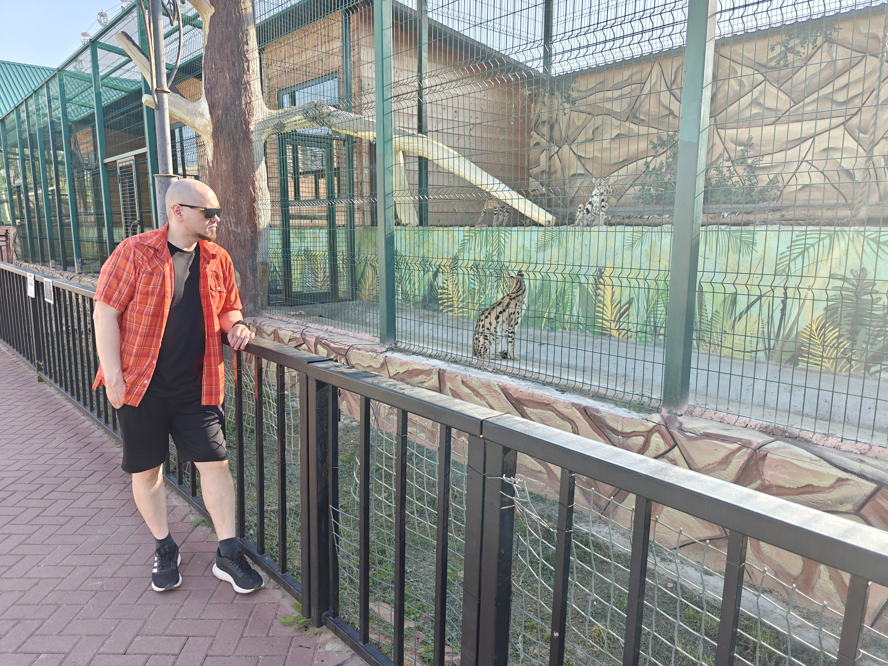
Расписание показов надо ставить такое, когда вы точно можете взять трубку.
Читать статью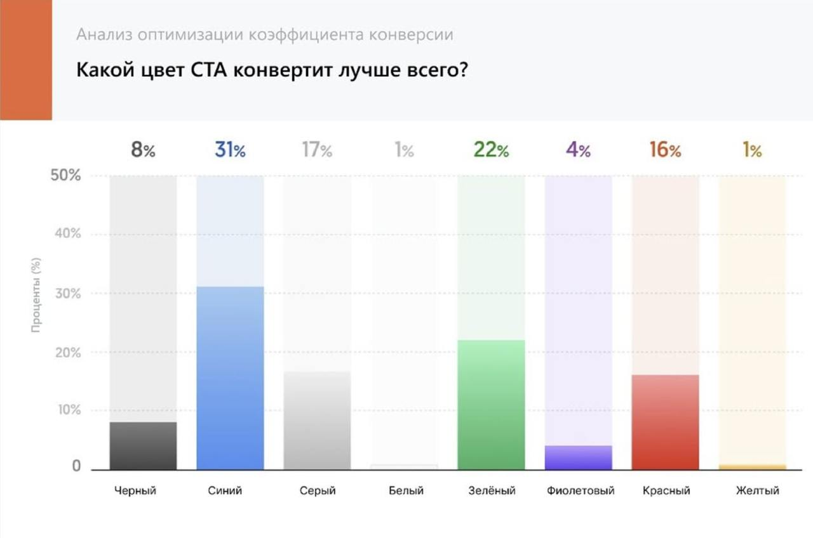
По А/В тестам маркетологи выяснили, что лучший цвет – синий и зелёный.
Читать статью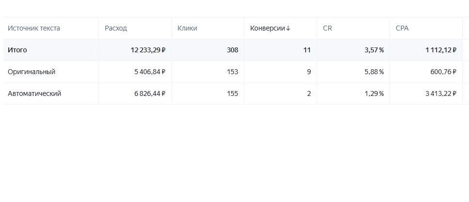
В Мастере отчётов: Группировки и метрики → Объявления → Источник текста
Читать статьюВ одном из проектов у меня ежемесячно начала расти стоимость клика в сетях. В январе клики были по рублю, в феврале по 2, март 3, апрель 4, май 5!!!
Читать статью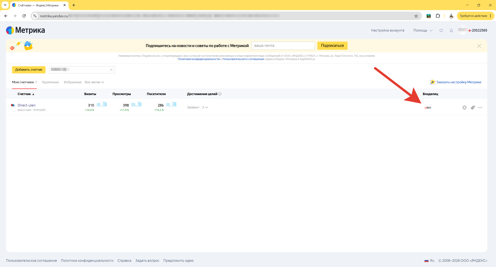
Извечный вопрос, когда надо выдать доступ к ЯТМ. Ребят, он не в настройках, а на главной страничке справа! 😁
Читать статью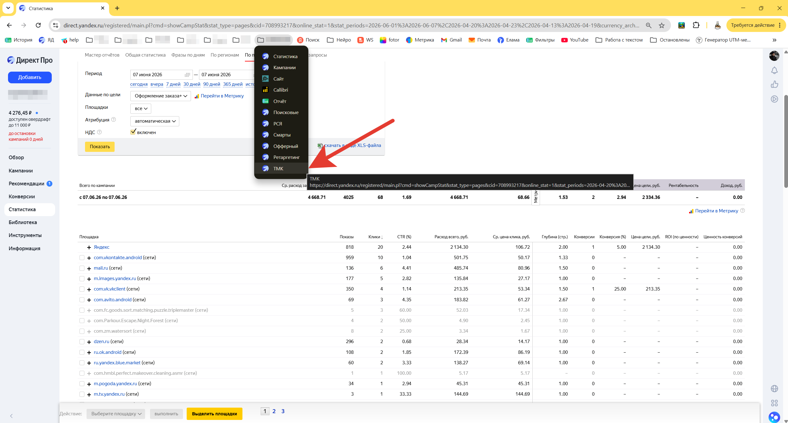
Кнопка находится в правом нижнем углу. Актуально, если сидишь ночами!
Читать статьюС появлением автотаргетинга (АТ) в 90% проектов давно не нужна огромная семантика! У тебя все показы все равно будут по АТ!
Читать статьюПри создании ЕПК появилось новое место показов – мессенджеры: Макс и Telegram!
Читать статью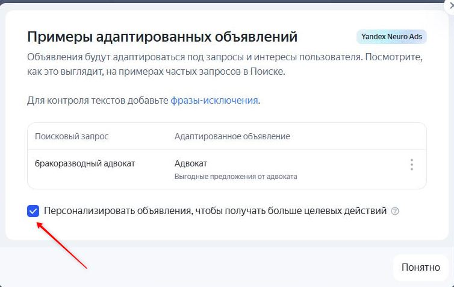
Находится она над блоком с изображениями. Вам нужно открыть, подождать когда прогрузится и проскролить в самый низ. Там будет галочка.
Читать статью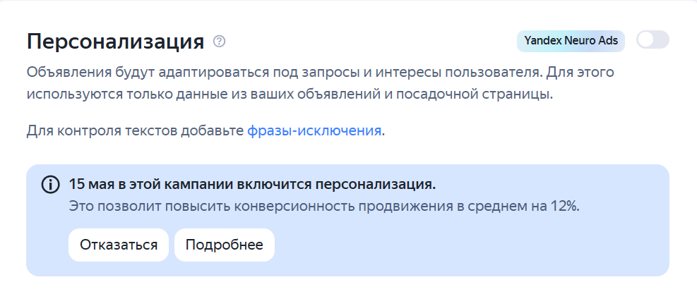
Персонализация – это улучшенная версия "Оптимизации текста объявлений под запрос" Подробнее здесь
Читать статью1) Заголовок объявления. 1.1 В заголовке должен быть ваш ключ/поисковой запрос.
Читать статьюБывает работает-работает реклама, а потом бац и резкий спад. И вот ты крутишь ставки, стратегии, а ничего не помогает. Оказывается дело не рекламе, а в…
Читать статью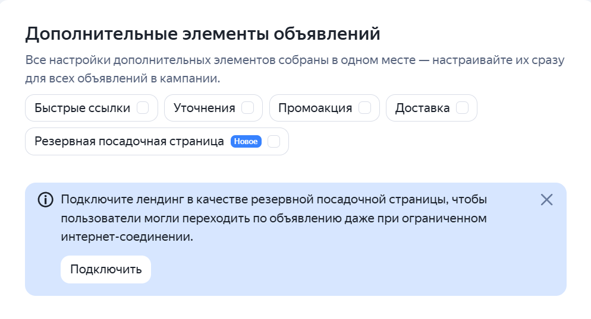
В настройки ЕПК появилась возможность создать резервную посадочную страницу (лендинг от Яндекса, который работает при нестабильном интернете). Подробнее…
Читать статью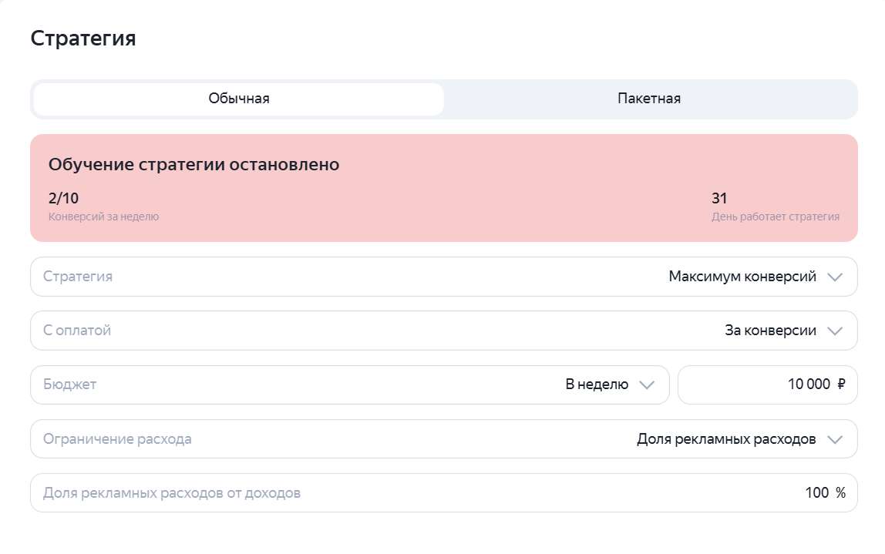
Обучение перезапускает: 1) Смена стратегии 2) Смена «Ограничение расхода» 3) Добавление, смена или удаление целей 4) Смена модели оплаты: за клики или за…
Читать статью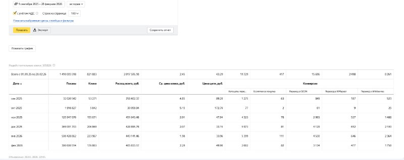
В сентябре ко мне на ведение зашёл интернет-магазин для взрослых. Ниша специфичная. На поиске изменений нет, а в сетях жёсткие требования к изображениями…
Читать статью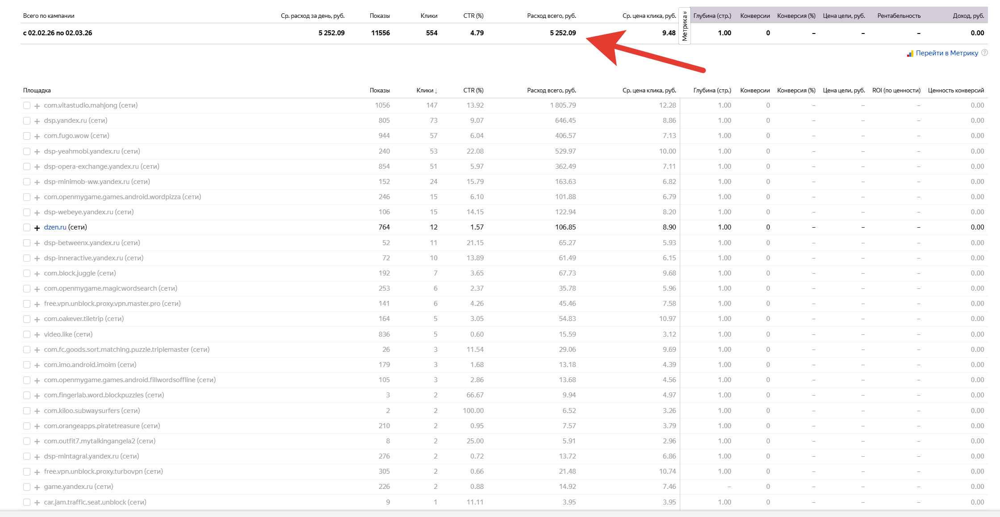
На скрине мусорные площадки за 3 часа работы ТМК сожгли 5к. Недельный был 12.000р.
Читать статью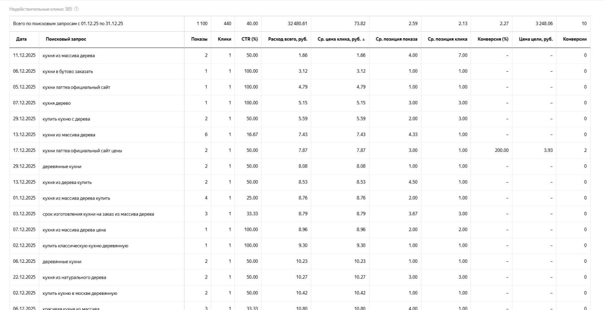
Крутишь рекламу по кухням/дезинфекции, где клик по Москве на поиске от 2к рублей?! Не беда!
Читать статью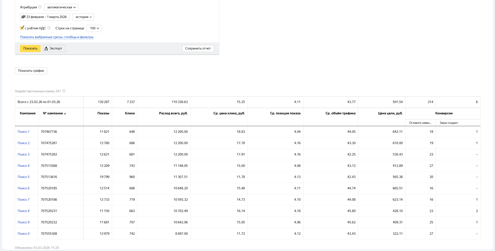
У вас бывало такое, когда есть хорошо работающая кампания, но масштабировать её не получается? Увеличение бюджета просто увеличивает цену лида?!
Читать статью– это постоянно крутить настройки.
Читать статьюВ 90% случаев у вас будет "Максимум конверсий" с оплатой за клики. И ваша основная задача – обучить её (должна набрать 10 конверсий в неделю).
Читать статьюПоиск 1) Поисковые запросы должны быть целевые! 2) Средний объём трафика должен быть не меньше 85 (это 1-2 место в выдаче) Если при этом нет конверсий –…
Читать статью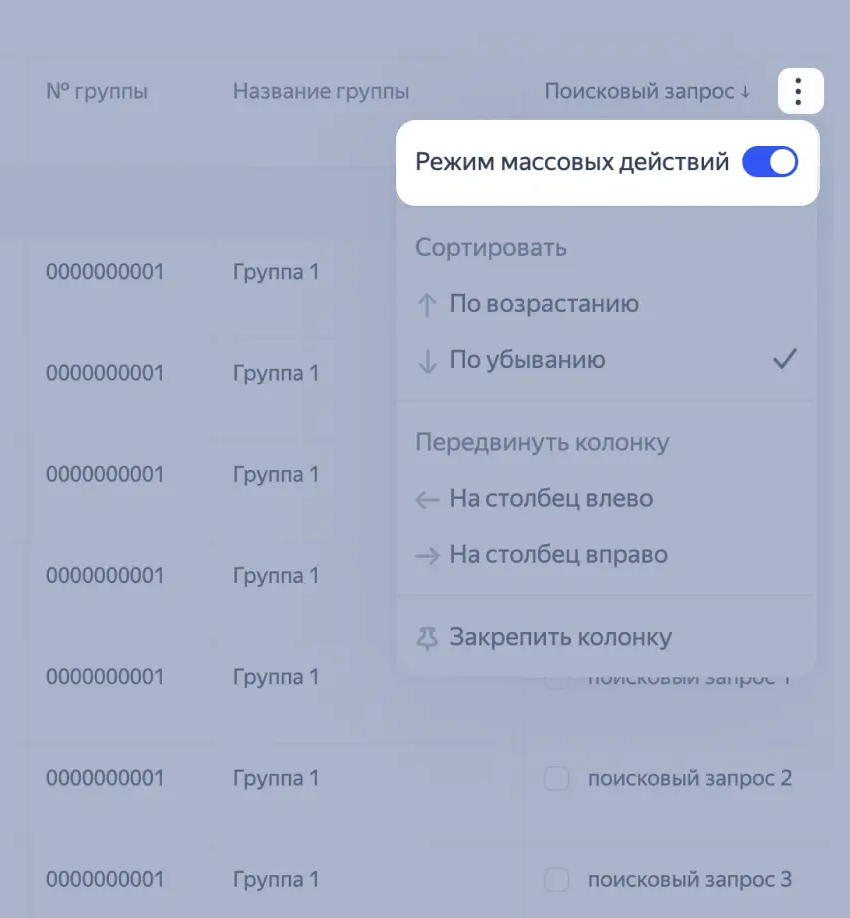
Группировка «Таргетинги» → «Поисковые запросы» Затем включаем опцию «Режим массовых действий»
Читать статьюЯ уже писал, что дневное ограничение лучше не ставить. Аналогично с ограничением клика на поиске и в сетях.
Читать статьюВсё зависит от целевой аудитории. ⦁ Если ЦА — женщины, можно сразу поставить для мужчин минус 100% ⦁ Если ЦА не до конца понятна — лучше не ставить и…
Читать статью
Чтобы реклама работала стабильно – она не должна быть лимитирована остатком на аккаунте! Я рекомендую держать баланс с запасом в 1.5-2 месяца! Но не…
Читать статьюЕсли ранее не запускали Директ, то я бы порекомендовал начать с: 100 тыс. руб. в регионах 150 тыс. руб. на Москву или Питер.
Читать статью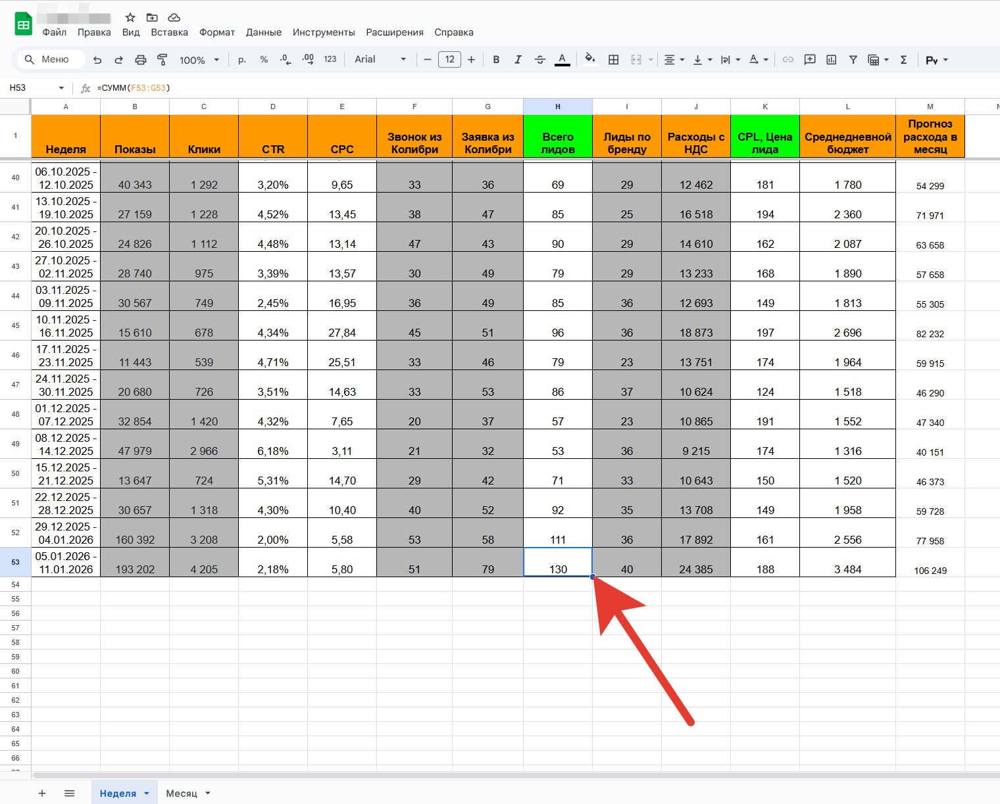
Рабочий год начался с нового рекорда! Продвигаю в Яндекс Директе сайт по доставке суши и роллов.
Читать статьюВ 2026-м году директологу важно не вымереть! Все эти тонкости по настройке кампаний отходят на задний план, а вперед выходит поиск клиента.
Читать статью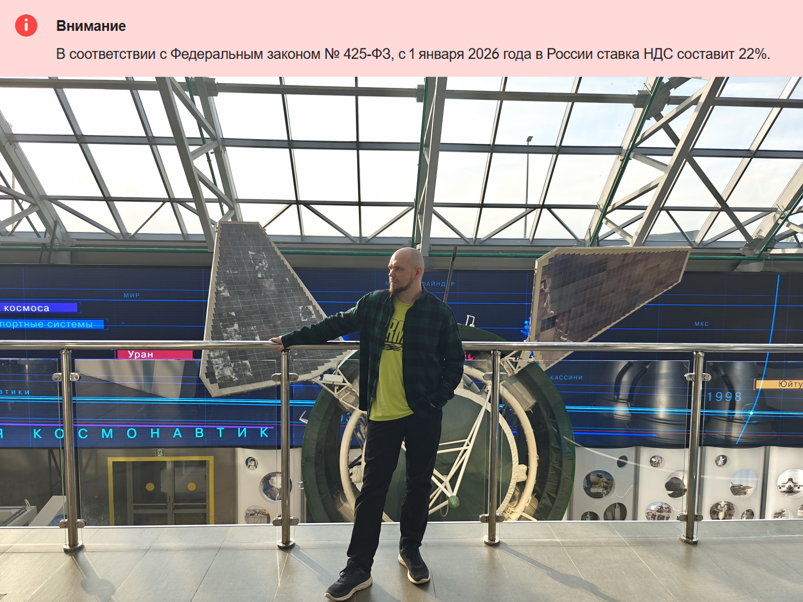
В рекламных кабинетах все цифры, что ты указываешь, – без НДС. Если раньше на заданный недельный бюджет 50.000р. списывалось 60.000р. с НДС, то теперь будет 61.000р. с…
Читать статьюВечных клиентов не бывает. Рано или поздно они уходят. У кого-то этот срок пол года, у кого-то год, 2-3. Это не важно. Важно всегда расставаться по мирному. Можешь отдать…
Читать статью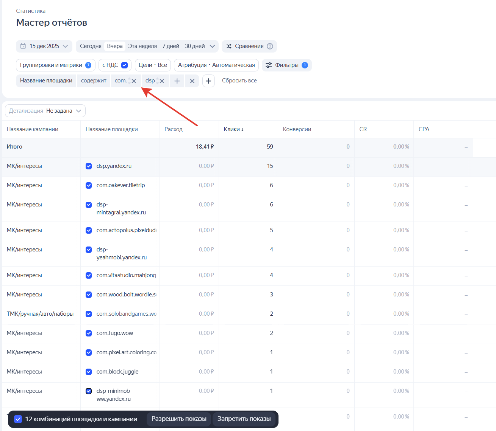
Даже в МК и ТМК!Кроме того, можно применить любой фильтр и показать все dsp и com! Или отфильтровать с высоким KPI!
Читать статьюИнтернет-магазины всегда рекламируются по фиду.Вам нужно создать и запустить на кликах все эти рк: 1) ТМК (Товарный мастер кампаний) 2) Товарная галерея (ЕПК по фиду на…
Читать статьюПодсмотрел у деда кейс, где он запустил на тест 2ю ТМК, но не по фиду, а по сайту и получил лиды дешевле! Честно говоря, я сам наблюдал такое и не раз.Своё Яндексу ближе😁…
Читать статьюУстановив небольшое дневное ограничение на аккаунте, вы: 1) перекроете кислород кампаниям с оплатой за конверсии.2) не дадите корректно работать кампаниям на кликах с…
Читать статьюОЗК – оплата за конверсии. Для того чтобы ОЗК начала работать – вам надо ИЗНАЧАЛЬНО завысить цену цели. Если хотите получать формы по 1.000р., то поставьте за отправку…
Читать статью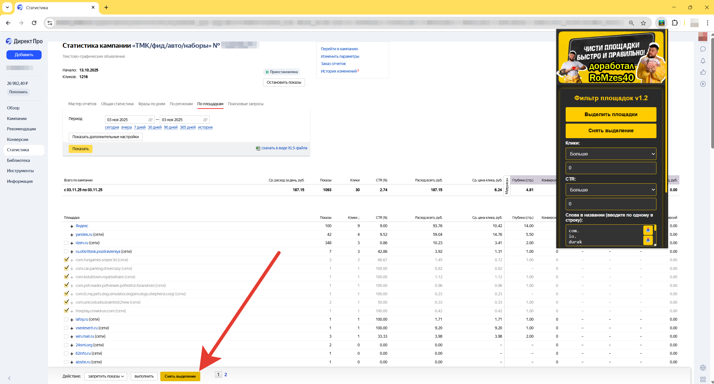
КОТОРОЕ Я ИСПОЛЬЗУЮ КАЖДЫЙ ДЕНЬ! Павел Мордаков создал, а Роман Черняев модифицировал, как я хотел! 😎 Как работает:Устанавливаете расширение в браузер и фильтрами…
Читать статью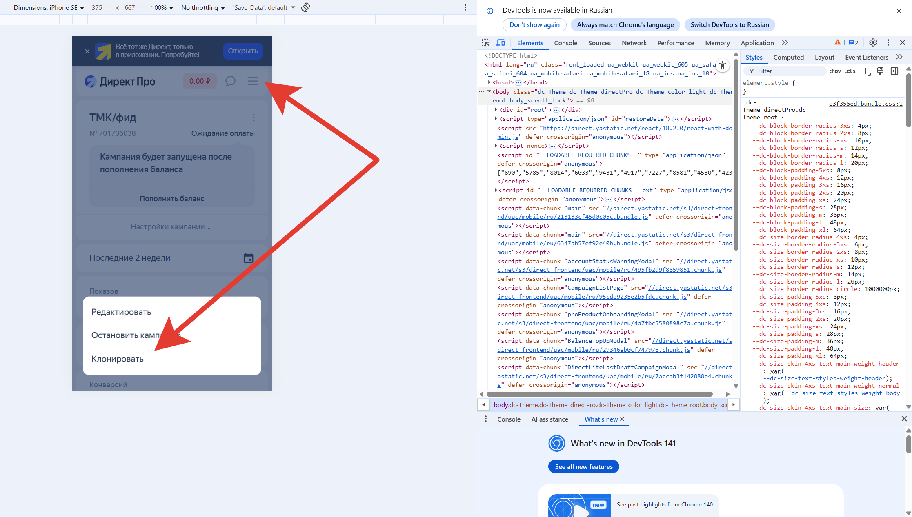
Товарный мастер кампаний клонируется только через мобильную версию. На странице с рекламными кампаниями:1) Жми F12 (появится меню разработчика)2) Выбирай вверху мобильное…
Читать статью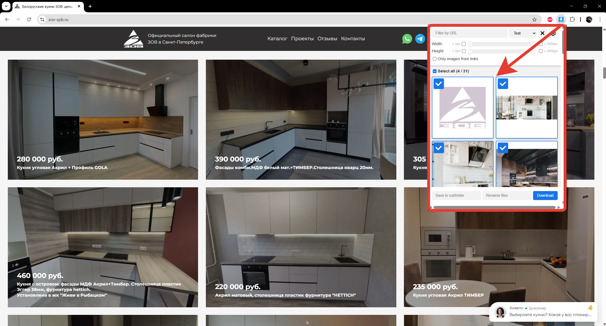
Image downloader – браузерное расширение, которое позволяет скачивать изображения с любого сайта. Полезно, когда надо скачать изображение, а оно защищено.Вытащит даже лого 😁
Читать статьюТекста на сайте пруд пруди, а вот цифр нет.Цифры всегда выделяют текст и дают больше конкретики.В УТП так это вообще база! Вот несколько примеров:1) Быстрый замер – замер…
Читать статью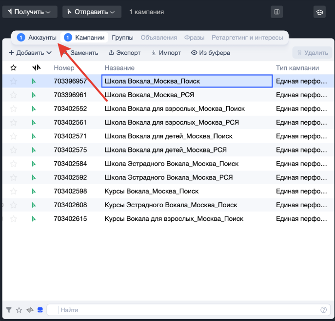
Наконец-то появилась возможность авторизоваться под управляющим аккаунтом!Теперь, если на ваш аккаунт выдали доступы - вы без танцев с бубном зайдёте в него через…
Читать статью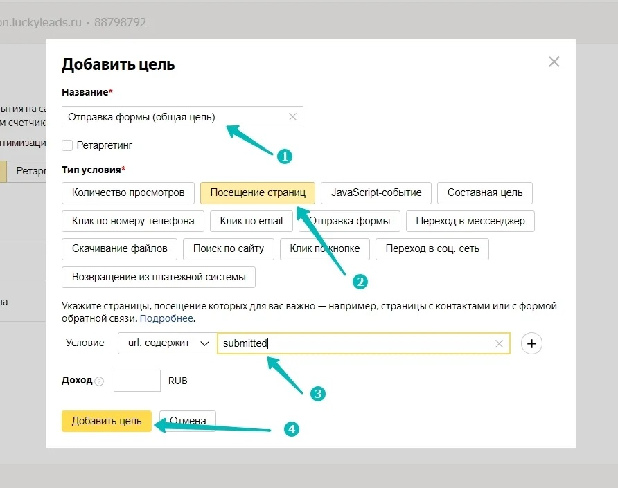
Вам лишь нужно добавить её в метрику:Посещение страниц → url содержит: submitted Откуда берется это условие? При отправке формы с сайта, созданного на Тильде, система…
Читать статьюВ сети множество споров, мол, а нужны ли бренд ключи на поиске или нет?По сути, по бренду вы покажетесь и так. Тогда зачем крутиться по ним? А вот зачем:1) Мы же крутимся…
Читать статьюТеперь в директе можно крутить рекламу:- на цифровых коробах на крышах такси; - на экранах в витринах. (магазинов, аптек, почт, ПВЗ и др.) Регионы показа: - Москва и…
Читать статью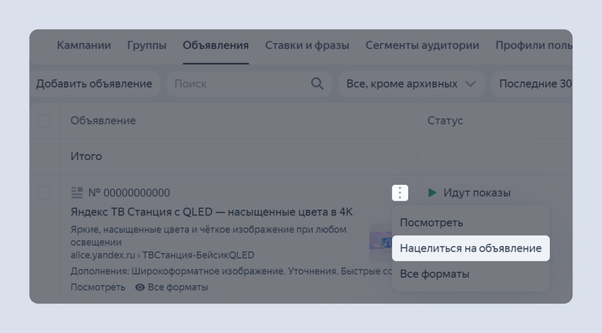
В директе появилась такая возможность!Объявления → три точки → "нацелиться на объявление" Проверь как обрезались твои широкоформатки с текстом😁 Подробнее читай здесь
Читать статью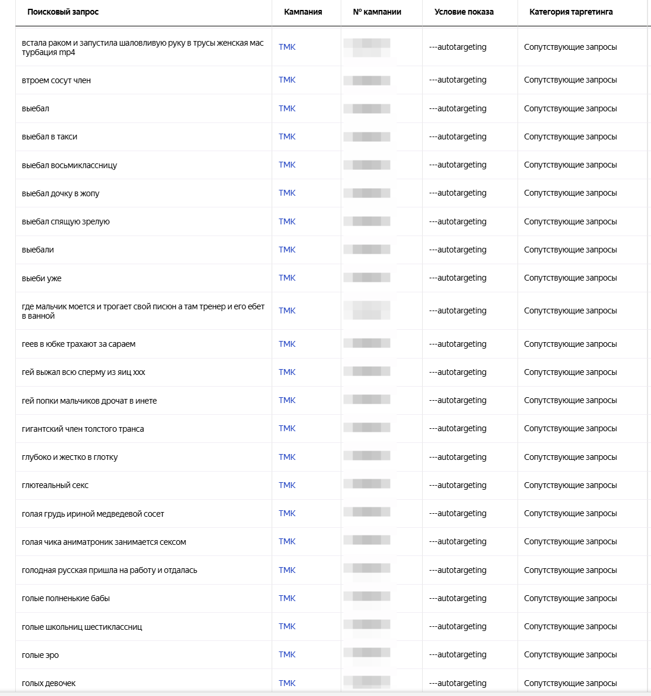
Конечно на кликах!Но если рекламируешь секс-шоп, а в поисковых запросах видишь такое, то ты просто вынужден перевести на конверсии. В ТМК, в отличие от МК, нельзя…
Читать статьюТеперь там 3 уровня:1) Базовый2) Профессиональный3) Продвинутый (с прокторингом) На данный момент можно пройти базовый и профессиональный уровни сертификации. Продвинутый…
Читать статью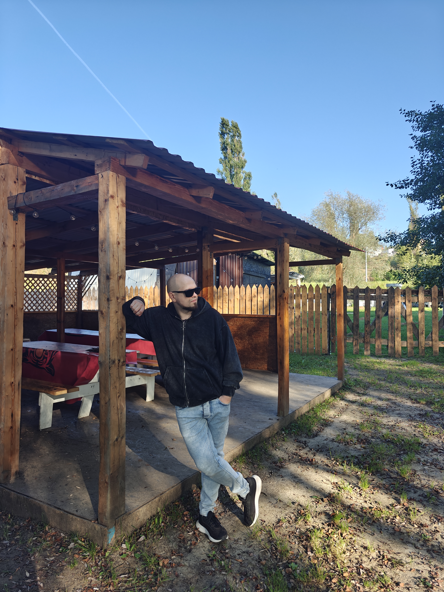
Интернет-магазины в Яндекс Директе рекламируются на основе фида. Фид – это файл с информацией о товарах и услугах.Рекламные кампании: 1) ТМК (Товарный мастер кампаний) 2)…
Читать статью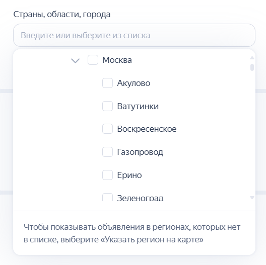
Помните, раньше Москва включала только Троицк, Зеленоград и Щербинку?Сейчас это выглядит так! ☝️И так не только по Москве. Теперь можно делать посадку под каждый регион 😁
Читать статью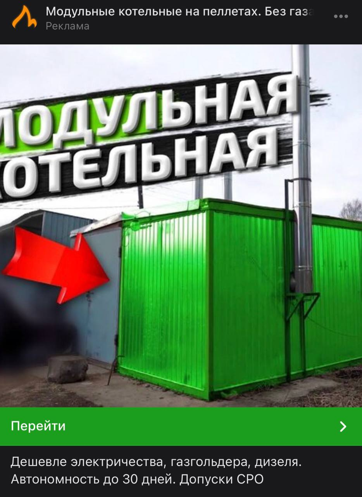
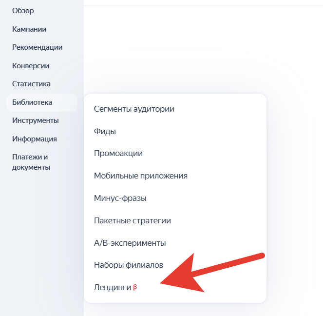
А в Яндексе Директе появился бесплатный конструктор лендингов с установленным счётчиком Метрики и автоцелями в подарок! 😂 Создать лендинг можно в разделе «Библиотека» →…
Читать статью
В феврале настроил и запустил Яндекс Директ по доставке суши и роллов в Рязани.Подключен коллтрекинг, т.к. в основном звонят.Лиды – первичные заявки и звонки из…
Читать статью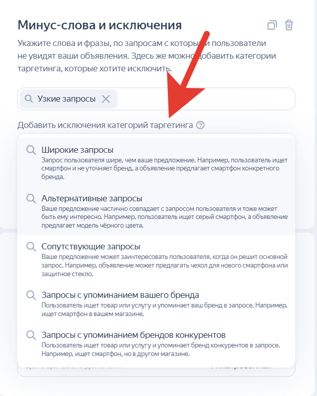
1) В поле "Аудитория" выберите вариант "Настроить вручную".2) В блоке "Минус-слова" нажмите "Добавить исключения категорий таргетинга" и выберите нужные пункты из списка.…
Читать статью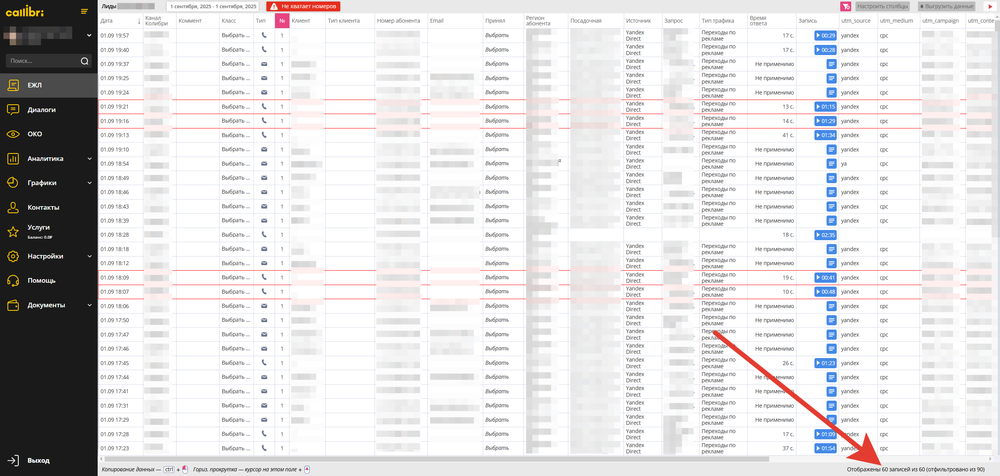
Продвигаю в Яндекс Директе сайт по доставке суши и роллов. За 1 сентября:1) Лиды: 60шт. (звонки+заявки)2) Расход: 6.220р.3) Цена лида: 104р.!!! У нас за неделю в среднем…
Читать статьюВот отучились вы на специалиста по контекстной рекламе. Изучили базу. Всё, можно брать клиента и идти в бой? Но нет, вы говорите, что недостаточно знаете и идете изучать…
Читать статьюМК внутри ЕПК!Вы заполняете до 7 заголовков, 3 текстов, 5 картинок, 6 видео, а алгоритмы Яндекса комбинируют их!Показываются: в Поиске, РСЯ, Товарной галерее и Картах.…
Читать статьюЕсли ты умеешь делать что-то круто, но никто об этом не знает – то откуда у тебя будут клиенты? Вот несколько советов владельцам тг каналов: 1️⃣Не пиши лонгриды – это не…
Читать статьюКаждый понедельник, как попугай, я повторяю клиентам одну и ту же фразу:Остаток на аккаунте: "N"Необходимо пополнить бюджет.Реклама лимитирована остатком и работает…
Читать статьюНаш бюджет на рекламу 15.000р. в месяц, но как пойдут продажи – готовы увеличивать до бесконечности! 1️⃣ Времена, когда можно было запускать рекламу с маленьким бюджетом…
Читать статью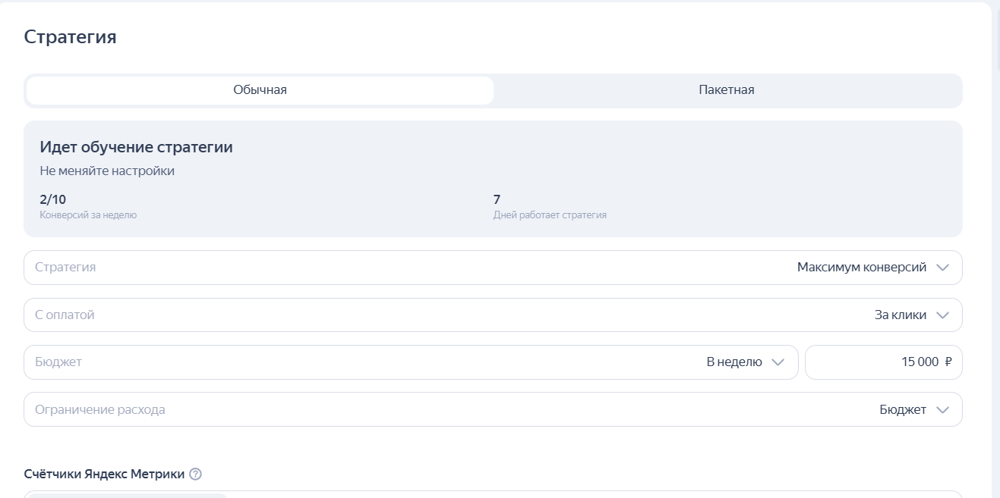
Еженедельно в конце недели я прохожусь по всем рк и обновляю стратегию.Нет смысла ждать красной плашки, если видишь 2/10.
Читать статью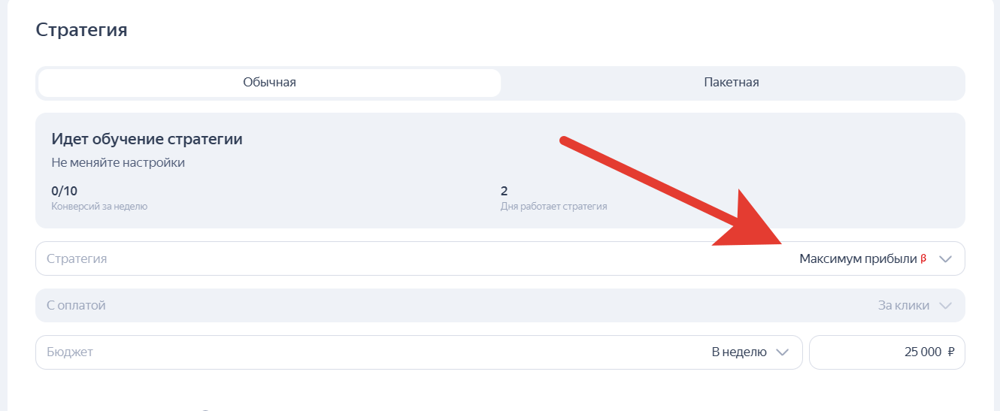
Максимум прибыли – стратегия, которая управляет ставками и стремится найти оптимальный баланс между количеством конверсий и их стоимостью.Работает исключительно на кликах…
Читать статьюСлышали такое от клиента?) Человек открыл сайт с ПК, увидел номер телефона, набрал и оформил заказ.Как понять, что это с рекламы? С какой это рк? Поиск? РСЯ? МК? Куда…
Читать статью
Никогда не работал без 100% предоплаты, но попробовал пойти клиенту на встречу и... обжегся. Теперь отсутствие 100% предоплаты для меня – ред флаг.Совет всем новичкам, кто…
Читать статьюАлгоритмы Яндекса собирают данные о каждом пользователе и показывают ему ту рекламу, чем он интересовался в последнее время. Например, ты искал в интернете что-то про…
Читать статью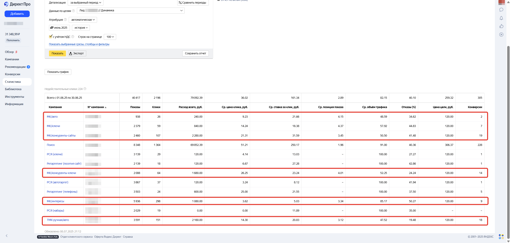
Слышал, что многие брезгуют МК, мол, фрод гонит.Однако это не так. МК очень гибкий! На скрине доставка суши. За клики работает только Поиск, все остальные рк на…
Читать статью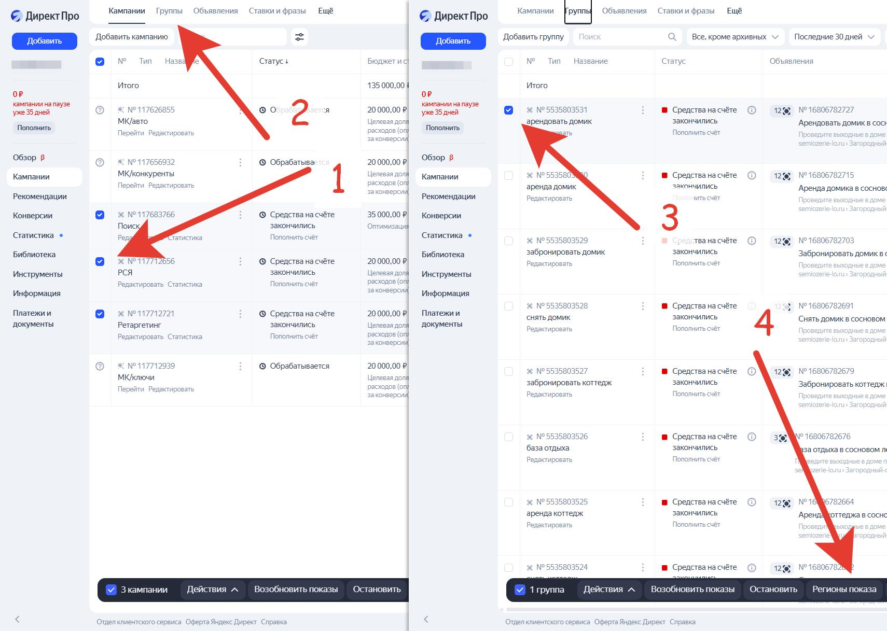
Обычно массовые действия делаются в коммандере, но по радиусу там выбрать нельзя.Поэтому делаем так:1) выбираем рк галочками2) жмём вверху "группы"3) выбираем галочками…
Читать статьюИменно ОН создаёт впечатление и включает в себя: 1) Товар/услугу (покажи о чём сайт: представителя/фото/видео).2) Сильный офер (на основе боли клиента!)3) Твои утп (почему…
Читать статью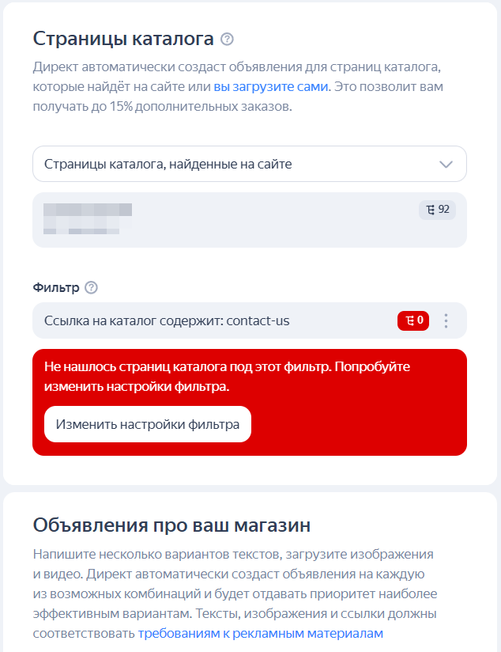
С 16.06.2025 настройка объявлений для страниц каталога в Товарном Мастере Кампаний стала ОБЯЗАТЕЛЬНОЙ! Если в фиде нет страниц каталога, то Директ АВТОМАТИЧЕСКИ создаст…
Читать статью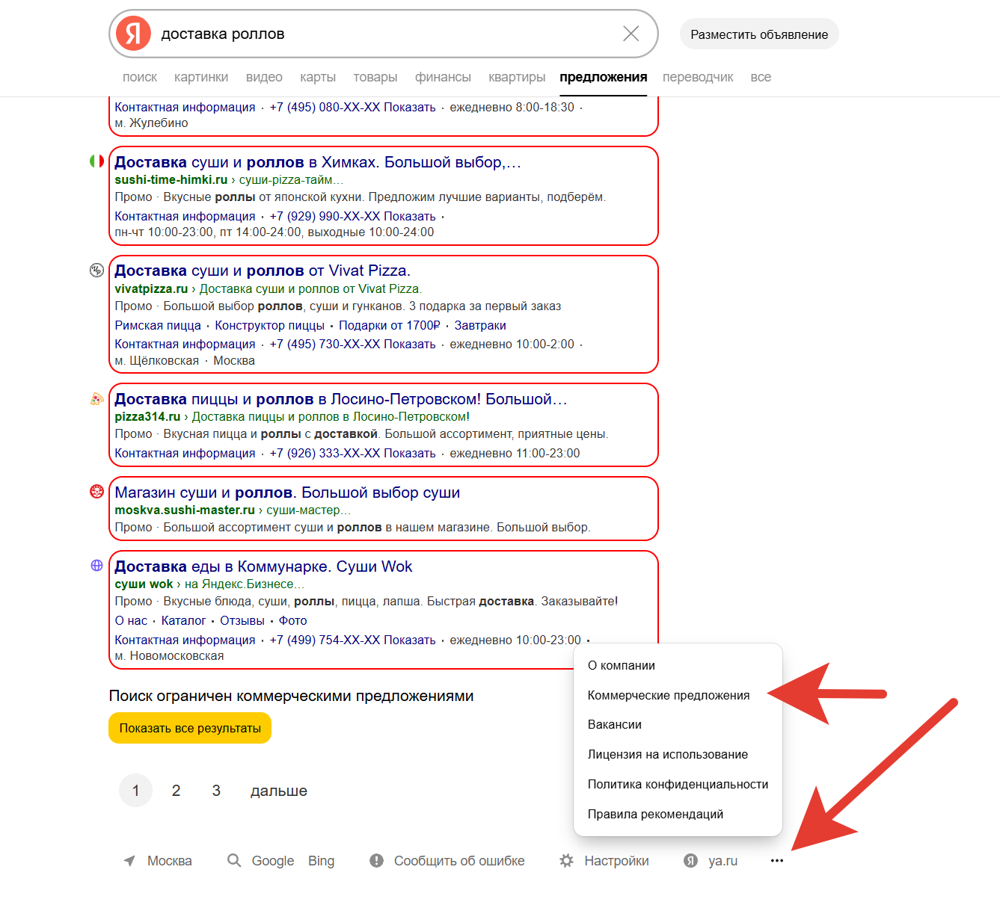
Хотите посмотреть все объявления конкурентов? Скрольте страницу до самого низа, жмите три точки –> коммерческие предложения.
Читать статьюВ нишах экстренных услуг: взлом замков, услуг эвакуатора, мобильный шиномонтаж и другие, где услуга нужна здесь и сейчас. Если ты потерял ключи от квартиры и стоишь в…
Читать статью
Оказываешь какие-то услуги?Бегом занимать! Кому зайдёт:Ремонт техникиКлинингСборка мебелиДезинфекцияГрузоперевозкиРепетиторствоОтделка квартирИ многим другим частным…
Читать статью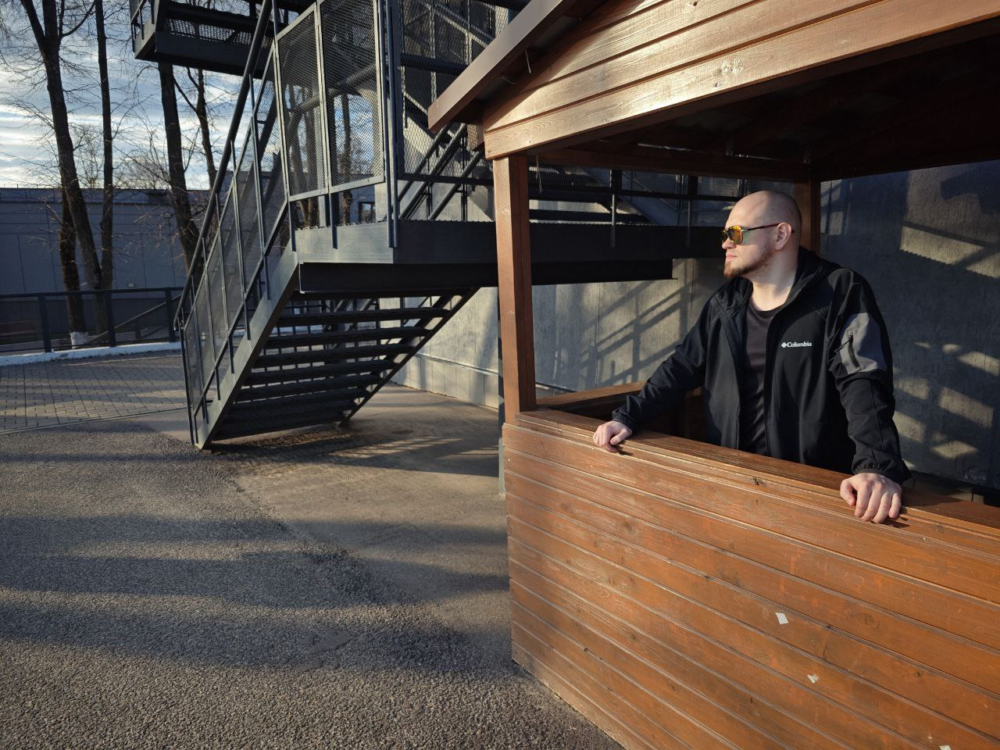
На поиске есть всего два самостоятельных условия показа: 1) Ключевые фразы2) Автотаргетинг В РСЯ же их 5:1) Ключевые фразы2) Автотаргетинг3) Интересы4) Ретаргетинг и…
Читать статьюПервое, на что я обращаю внимание при аудите любого сайта для контекстной рекламы – это шапка. Помимо навигации в ней должны быть контакты, например:1) кликабельный номер…
Читать статью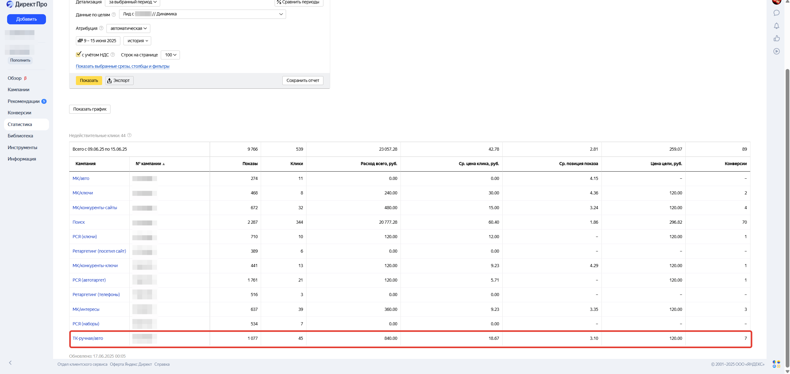
+ 7 лидов по 120р. в доставке суши за прошлую неделю! Я человек простой: вижу товары на сайте – создаю ТМК (товарный мастер кампаний)И всё равно товары это или услуги.Есть…
Читать статью
1) Запускаешь Поиск на комерс ключах: купить, заказать, цена, стоимость и тд.2) Получаешь первые 100 кликов и видишь все поисковые целевые.3) Смотришь, что средний объём…
Читать статью
1) Работает – не лезь!2) Не опускай баланс до 0!3) Анализ, корректировки, тесты, запуски – в понедельник!4) Есть телефон на сайте – подключай коллтрекинг!5) Не запускай…
Читать статьюЕсли вы задумывались сделать сайт для контекстной рекламы и думаете на чем лучше, то я скажу вам – Тильда. Тильда – самая популярная платформа для создания сайтов без…
Читать статью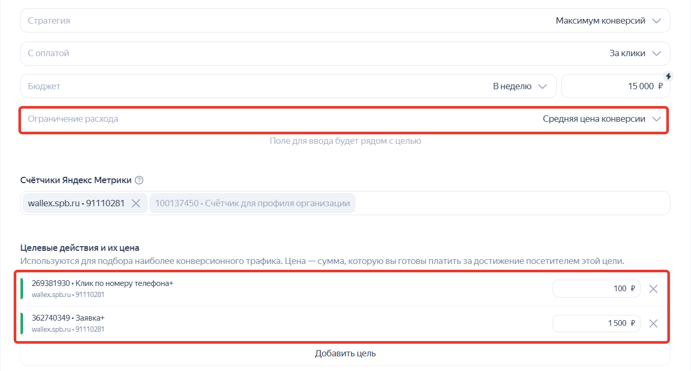
Всё ещё ставишь ДРР чтобы добавить несколько целей?с 30 мая 2025 года в ограничении расхода "Средняя цена конверсии" можно выбрать несколько целей!Теперь обучать рк стало…
Читать статью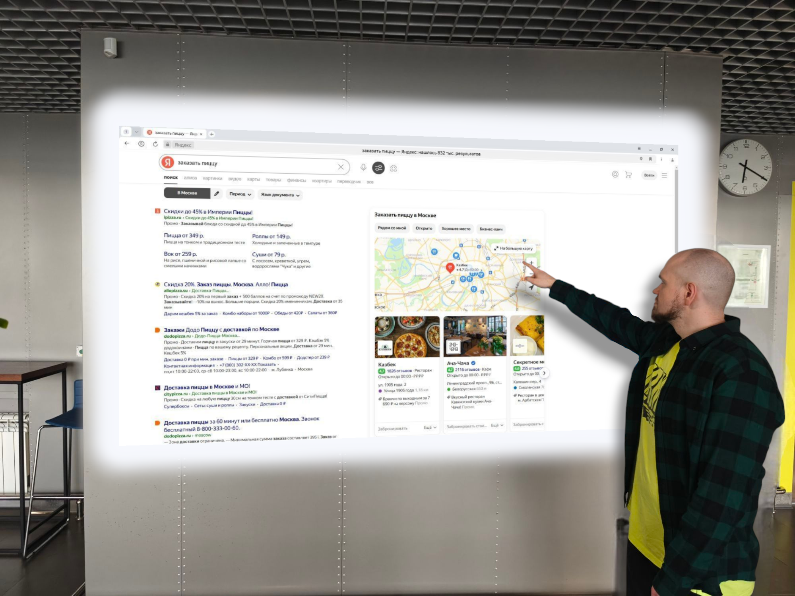
Слышали такое от клиента?)Что делать в таких случаях: 1) Открыть Яндекс поиск в инкогнито, установить его регион показа и поискать самому. При нахождении сделать скрин и…
Читать статью1) Сайт.Должен быть современным, продающим. Сильный офер на главном экране, утп, большой каталог РЕАЛЬНЫХ фото. Отзывы на независящим источнике, по типу Яндекс Карт. 2)…
Читать статью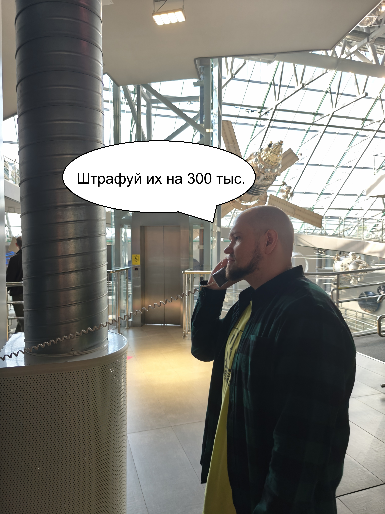
До 30 мая 2025 года компаниям, ИП, и всем кто обрабатывает персональные данные - необходимо пройти регистрацию в Роскомнадзоре. Штраф за неуведомление:- должностным лицам…
Читать статью1) Не запускать РСЯ сразу на большом недельном бюджете.(вы глазом не моргнёте, как всё улетит на com.) Ставьте недельный 500р., с ограничением ценой клика в 100р. Чистите…
Читать статьюК вам обратился клиент за настройкой Яндекс Директа.Вот три вопроса, который вы должны задать. 1) Можете ли прислать ссылку на ваш сайт?90% успеха рекламы в Яндекс Директ…
Читать статьюЗа 5.000р. можно найти директолога, но когда ему звонишь – он отвечает шепотом. Спрашиваешь почему шепотом – он говорит на математике сидит. Смешно, правда?Но меня больше…
Читать статью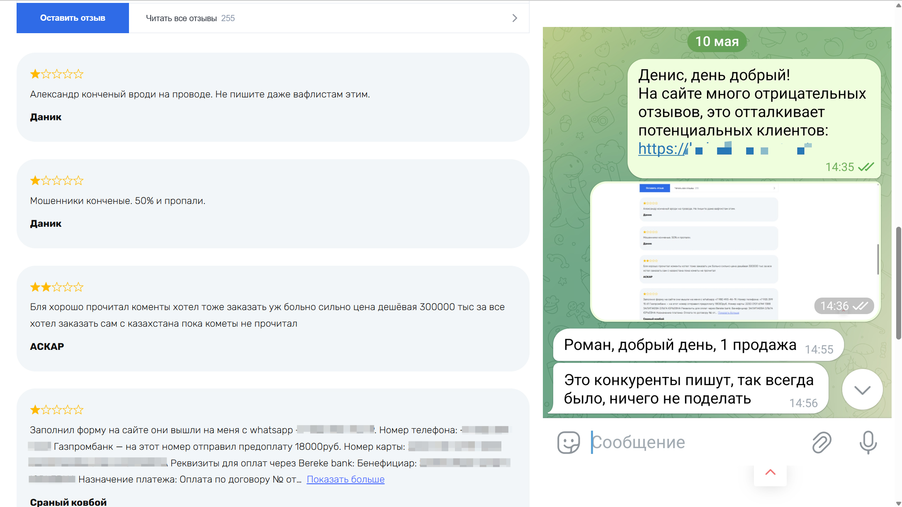
Вот так ведешь проект, открываешь на выходных блок с отзывами на сайте и видишь такую картину... Пишешь клиенту, что такие отзывы отпугивают потенциальных покупателей. На…
Читать статью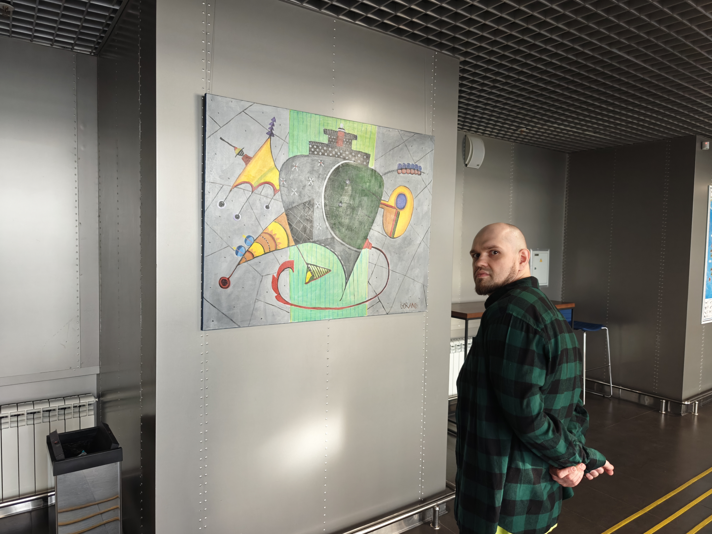
Когда работал в агентстве, ко мне на ведение пришел клиент по продажам машин из Кореи. На сайте было около 8 машин, причем 2 из них повторялись) Там были не фотографии…
Читать статьюДобавили вы новую рк или сменили креативы, бюджет, ставки - не важно.Минимальное время на тест - неделя. Лучше всего вносить изменения в понедельник, ибо каждый…
Читать статью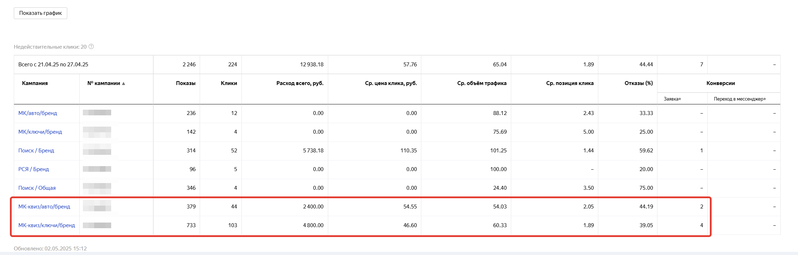
Клиент по кухням с маленьким бюджетом.Сделано несколько МК за ОЗК с ценой заявки 1.200р. с НДС:1) на сайт на ключах2) на сайт без ключей3) на квиз на ключах4) на квиз без…
Читать статью1) Курс.«За советом по кирпичам иди к каменщику».Вам нужен не просто курс, вам нужен лучший курс от эксперта по Яндекс Директу, где будет не только теория, но и практика.…
Читать статью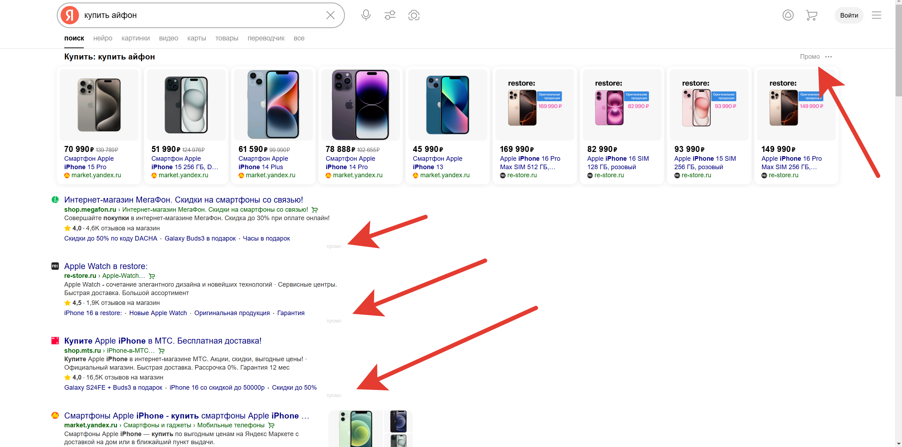
Теперь в Поиске Яндекса реклама помечается как "промо", вместо "реклама". Ждем роста CTR наших объявлений! 😂
Читать статью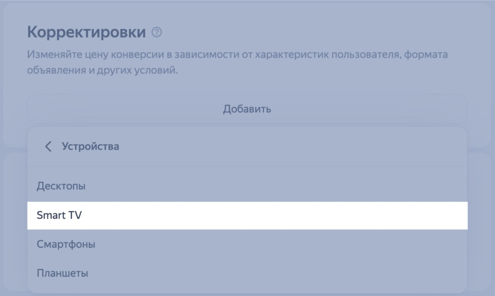
В ЕПК появилась отдельная корректировка для показов объявлений на Smart TV. Прежде чем отключать – проверьте не идут ли оттуда конверсии!😂Срезы –> Тип устройства
Читать статью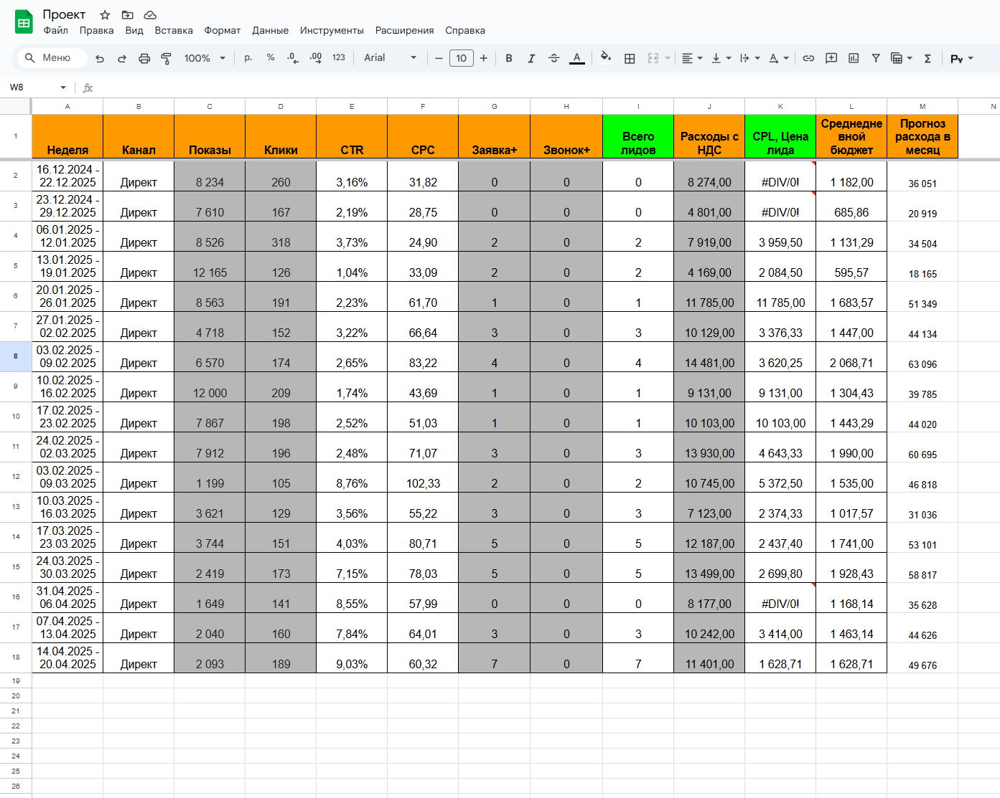
Еженедельно по понедельникам я заполняю клиентский отчёт. Такой отчёт у меня идёт на каждый проект. Отличается только целями. Даже если клиенту он не нужен – я всё равно…
Читать статьюОсновная задача любого фрилансера – поиск клиентов. TenChat – это деловая соцсеть для нетворкинга, развития личного бренда и заработка. В ней сидят предприниматели.…
Читать статьюВ агентстве мы никогда не запускали новые проекты на кликах. Алгоритм был такой: 1) Все рк стартовали за ОЗК 2) Стратегия: ДРР с макро+микро конверсиями.3) Недельный…
Читать статью
Летом прошлого года, работая в агентстве, я случайно наткнулся на ВК паблик Олега Чижова. Он расписывал свой путь из агентства на фриланс.Я напрямую его спросил: где брать…
Читать статьюВсегда!Если в шапке сайта имеется номер телефона, то я рекомендую подключать коллтрекинг. Отслеживать звонки на сайте по кликам на номер бессмысленно.К тому же, лично я…
Читать статью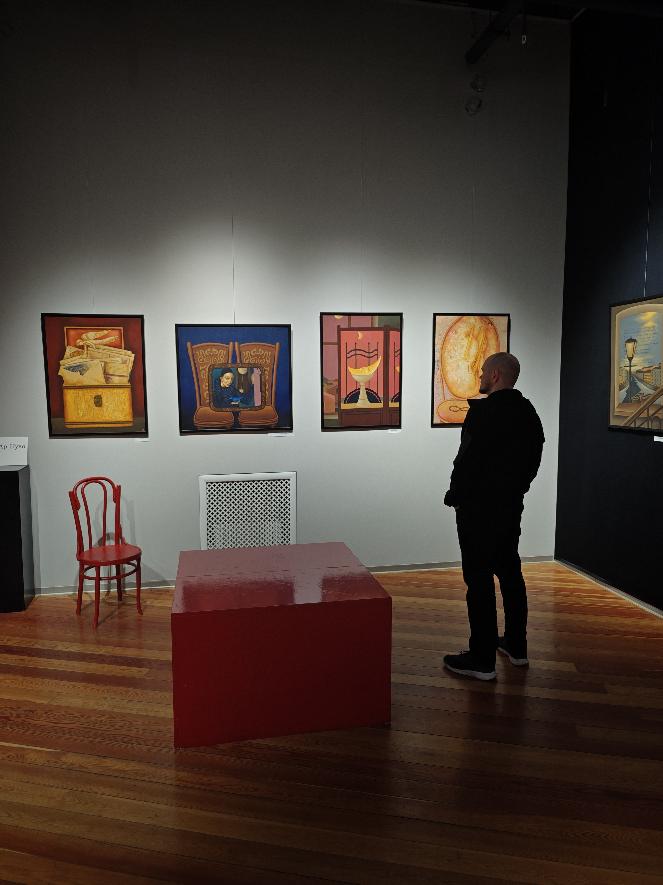
Самое важное на Поиске - релевантность. Если её нет - ставки будут конские! 1) ЗаголовокУказываем ключевое слово + преимущество (акция, бесплатная доставка, низкая цена и…
Читать статьюВ Директе сегодня обновили Мастер отчётов в котором нельзя чистить площадки в МК, ТК и подобных рк. Тот самый момент, когда ты через него не чистил и даже не знаешь как😂…
Читать статьюПоиск клиентов - жизненно важная задача не только директолога, но и любого фрилансера. Ни для кого не секрет, что репутация важнее денег, ведь лучше рекламы чем сарафанное…
Читать статьюЕсли вы будете под каждую услугу сайта делать новую рк, то придется дробить бюджет на рекламу. Обучить одну рк с недельным бюджетом 10.000р. легче, чем 10рк с 1.000р.
Читать статью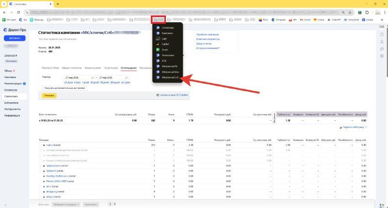
Под каждый проект я делаю в закладках браузера папку, в которой:1) Статистика (Мастер отчётов с нужными галками)2) Кампании3) Сайт проекта4) Коллтрекинг5) Еженедельная…
Читать статью1) Еженедельно увеличивать цену цели в 1.5 раза.Была цена цели 1.000р., сделай 1.500р. и посмотри недельку. 2) Ставить ДРР и добавлять микроцели (клик на телефон, переход…
Читать статью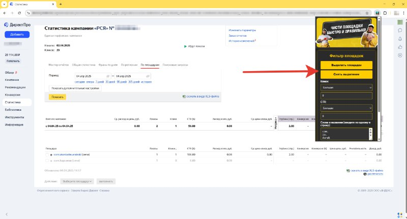
Я лично попросил Павла перетащить кнопки наверх, ибо фильтров стало много и приходилось постоянно скролить расширение. На следующий день он сбросил мне новый файлик😊…
Читать статьюВсе знают, что понедельник у директолога - самый ответственный день.Я начинаю готовиться к нему уже с воскресенья, накидывая корректировки в черновик. В мои основные…
Читать статьюУ Полины во вторник вышел пост о том, как её давний клиент оказался соседом.Мой комментарий набрал огромное количество реакций.За день в моем канале +10 человек. Вывод:…
Читать статью
Заводите и ведете Telegram канал. а) Все свои ТГ-посты канала дублируете в:1) тенчат2) дзен3) vc.ru4) вк группа + личная страница5) телетайпВ конце каждого поста ссылка на…
Читать статью1) Непонятно как вести. Нельзя, например, задать отдельно цену клика на поиске и отдельно в сетях.Разную стратегию и бюджет. 2) Алгоритмы работы рк на поиске и рк в сетях…
Читать статьюЕсли вас насилу закинули в какую-то ТГ-группу - не нажимайте "Сообщить о спаме и выйти".Лучше напишите чем вы занимаетесь. Вас сами кикнут, если надо.🍑
Читать статьюЕсли хотите, чтобы рк работала стабильно - обучите её.Для того чтобы рекламная кампания обучилась, она должна набрать минимум 10 конверсий в неделю. Я использую как макро…
Читать статьюПавел Мордаков создал расширение для чистки площадок в сетях!🤪 Устанавливаете расширение в браузер и фильтрами выбираете то, что хотите отключить.Фильтровать можно по:…
Читать статьюПришел клиент с авито на рекламу в директ. Говорит через пару дней сайт будет новый, ты пока запусти на этот рекламу. Какие услуги и цены там будут сейчас расскажем.…
Читать статью1) На Поиске можно не ограничивать клик. Вы просто задаёте недельный бюджет, а алгоритмы Яндекса распределяют его на неделю. 2) В Сетях страхуюсь и ставлю 100р.Как…
Читать статьюВсё зависит от ниши. Если ранее не запускали Директ, то я бы порекомендовал: Начать со 100.000р. в регионах. Если реклама идёт на Москву или Питер, то от 150.000р.Так или…
Читать статьюВ феврале настроил и запустил клиента по доставке суши и ролов в городе с населением пол лимона. 1) Комерс ключи + автотаргетинг2) Подключен колтрекинг, т.к. в основном…
Читать статьюЕсли обученная рекламная кампания простоит с 0 на балансе несколько дней - обучение сбросится. Исключением будет ручная стратегия с дневным бюджетом.
Читать статьюЕсли вы видите, что рк за ОЗК обучилась (стабильно приносит свыше 10 конверсий в неделю) можно пробовать постепенно снижать цену цели, но не больше чем на 20% за раз,…
Читать статью1) Конвертит.Работает - нелезь) 2) В конце недели. Если установлен недельный бюджет 100 тысяч, а в пятницу вы обновили стратегию, то можете открутить ещё 100-ку за…
Читать статьюСтратегия и бюджет, как правило, задаётся в понедельник-вторник.Статистика за прошлую неделю анализируется по понедельникам. Если ты будешь ежедневно судорожно крутить…
Читать статьюЕсли у вас установлен недельный бюджет 10.000р.(это 12.000р. с НДС), то на аккаунте в понедельник должно быть не менее 12.000р.В противном случае реклама будет работать…
Читать статьюПри копировании запущенной рк через Директ Коммандер может слететь организация и не только.
Читать статьюЯ писал ранее, что почти во всех проектах запускаю допом несколько МК за ОЗК. На ключах, на автомате, на сайтах конкурентов. В каждом МК я ежедневно чищу площадки. Какой…
Читать статью1) История.Рекомендую завести эксель/гугл док и вести историю по каждому проекту. Это для того, чтобы вы не держали всё в голове и не капались в "истории изменения".Не…
Читать статью1) Упаковаться, чтобы вызвать доверие (открыть соц сети, убрать анонимный статус, написать кто вы и чем занимаетесь, поставить свою фото на контакт). 2) Зарегистрируйтесь…
Читать статьюЕсли ты запустишь РСЯ на большом бюджете, то в 99% сольёшь деньги на мусорные площадки. Поставь недельный 500р. и почисти денёк площадки. Затем увеличь до 1.000р. и снова…
Читать статьюНа новых аккаунтах не запускайте первые рк за ОЗК. Запустите что-то на кликах сначала и покрутите день-два. Затем можете создать рк за ОЗК. Так вы избежите бана.
Читать статьюЗагнать людей на сайт много ума не надо, но продаёт-то не реклама, а ваш сайт! Как должен выглядеть сайт для контекстной рекламы: 1) На первом блоке покажите свой продукт,…
Читать статьюКогда я устроился в рекламное агентство и получил первых клиентов, то общался с ними в переписке длинными предложениям. Со множеством причастных и деепричастных оборотов.…
Читать статьюПосле введения автотаргетинга смысла собирать 100500 огрызков слов нет.Вам надо только собрать основные маски/матрицу через комбинатор слов. Распределить по группам. Под…
Читать статью1) В 90% у вас будет "Максимум конверсий" с оплатой за клики на недельном бюджете.Обучение стратегии во главе угла. Чтобы стратегия обучилась и стабильно работала - она…
Читать статьюСняли галочку => сохранили => вернули обратно и снова сохранили.
Читать статьюкупитьзаказатьзаказценастоимостьсколько стоиткаталогнедорогодешеводорогоизготовлениеиндивидуальный размеринтернет-магазинмагазиноптоптовыйпод…
Читать статьюНедавно попался на ютубе мужик блогер. Бухает в деревне на кухне и рассказывает истории, показывает своё хозяйство: гуси, кролики, свиньи, собаку, корову. Вот как-то…
Читать статьюПервый раз я столкнулся с этим ещё когда начинал свою карьеру в агентстве. Коллега уходила в отпуск и передала клиентов. Ежедневно проверяя статистику я заметил, что в…
Читать статьюПрактически во всех проектах у меня несколько МК за ОЗК (оплата за конверсии)Стандартно их 2 (один на ключах, другой на автоаудитории)Можно ещё делать 3-й на сайтах…
Читать статьюСЕО с оплатой за клики)Врубаем все и дуреем от этой прикормки!👍
Читать статьюОтличный сайт для создания РСЯ баннеров.Есть даже AI генерация изображений
Читать статьюВ декабре запустил клиента по мобильному шиномонтажу в Москве. Бизнес из разряда эвакуаторов)1) Настраивается одна рк Поиск на простейший лендинг с номером телефона.2)…
Читать статью1) Если конверсии идут одна за одной, то это верно, но как часто мы встречаем такой конверсионный сайт? 2) Если их 1-3 в неделю, тогда не стоит и вот почему. Обучение…
Читать статью15 декабря запустил в Директе прокат горнолыжного снаряжения. Сайт не конвертил от слова совсем, хотя на сайте есть всё. Хороший оффер, классные картинки, каталог с…
Читать статью